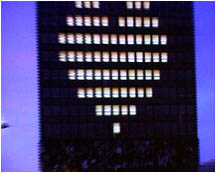
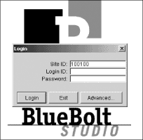

- computer -
. Inside a PC - Find out about motherboards, sound cards, hard disks and more. Form Factors - Check out the different forms computer technology can take, from PDAs to microcontrollers. Memory - Learn about all different types of computer memory. Networking - Learn about networking your home or office.
The author and the University of Houston Libraries do not assume and hereby disclaim any liability to any party for any loss or damage resulting from the use of information in The Public-Access Computer Systems Review. . The Public-Access Computer Systems Review Serving the Internet Community Since 1990. Author Index Issue Index Subject Index Search A Brief History of the Journal The Public-Access Computer Systems Review (PACS Review) was an electronic journal about end-user computer systems in libraries. , who served as Editor-in-Chief for volumes one (1990) to seven (1996).
|  |
. Sevcik This text was published by Prentice-Hall, Inc. It remains the definitive work on analytic modelling of computer systems. The publisher has returned the copyright to the authors, who make the material available here for viewing or downloading, in Adobe Acrobat PDF format (free Acrobat reader available here). START HERE -- The easiest way to access the book online is through the hyperlinked Table of Contents available through this link.
|  |
. We specialize in developing and delivering high-tech application software to the utility industry. As the computer and utility industries continue to evolve, we provide expandable, workable solutions that enhance both day to day operation and management. PCS offers Utilit-e Solutions, a suite of premier products for the Utility Industry. A primary goal of PCS is to function in partnership with clients by assisting in managing all their computerized software needs.
 |
further information: http://www.computerfinearts.com/
.